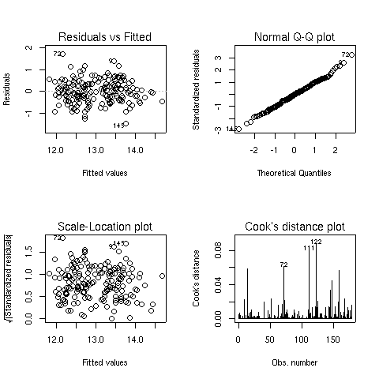
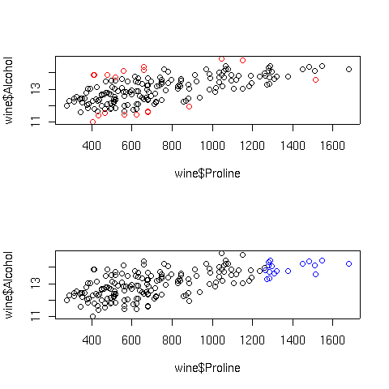
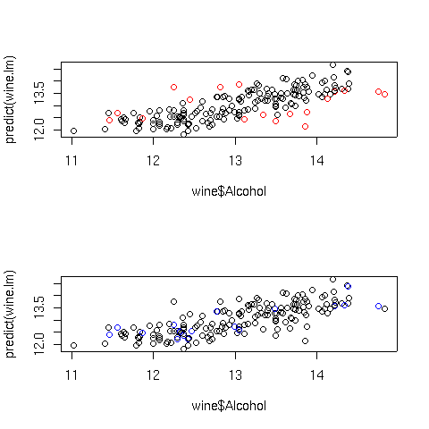
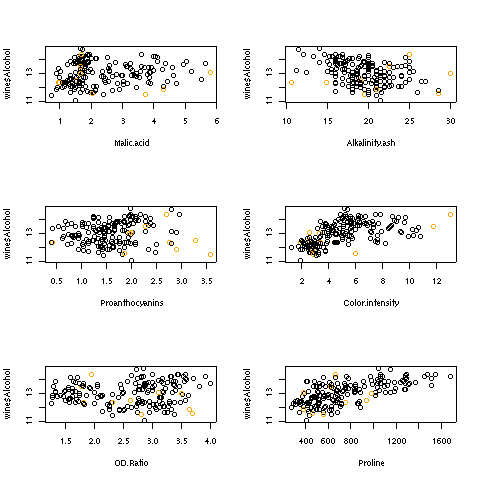
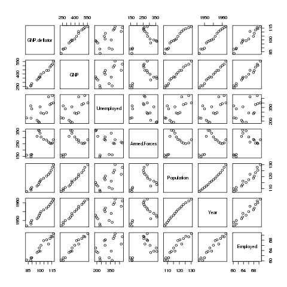
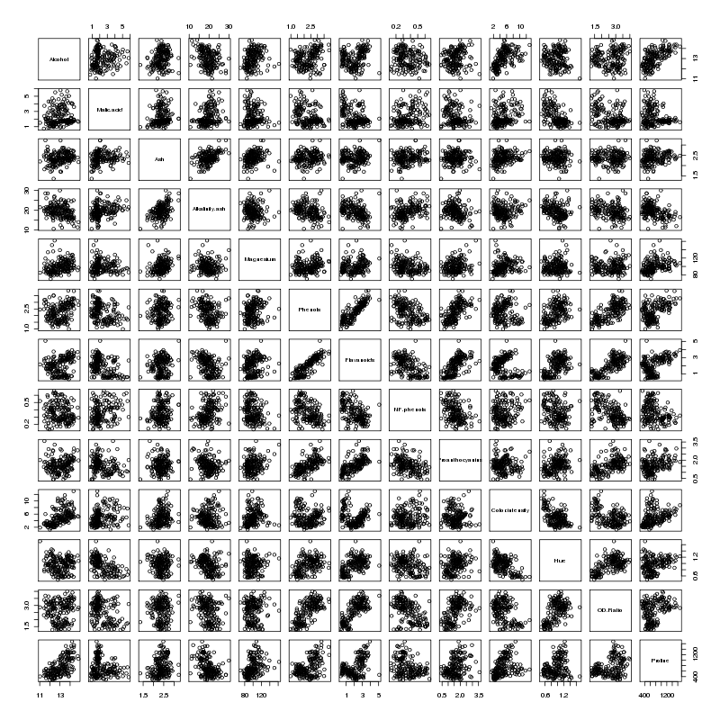
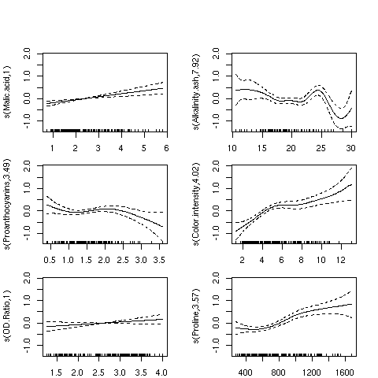
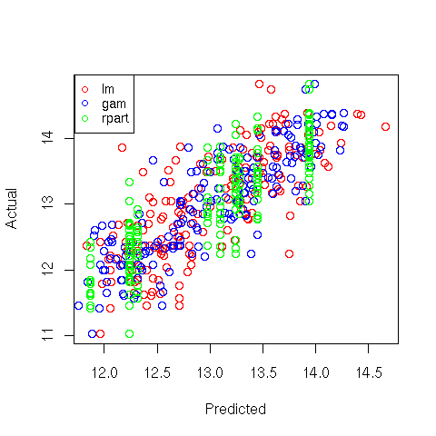

Linear Regression
1 Linear Regression
Linear regression is a very popular procedure for modeling the value of one
variable on the value(s) of one or more other variables. The variable that
we're trying to model or predict is known as the dependent variable, and the
variables that we use to make predictions are known as independent variables,
or covariates. Linear regression makes the assumption that the changes in the
dependent variable can be modeled as a monotonic linear function of the
independent variables; that is, we assume that a change of a certain amount
in the independent variables will result in a change in the dependent variable,
and the amount of change in the dependent variable is constant across the range
of the independent variables. As a simple example, suppose we're interested in
the relationship between the horsepower of a car (the independent variable) and
the miles per gallon of gas (MPG) of the car. When we fit a linear regression
model, we're saying that a change of one horsepower will have the same effect on
the MPG regardless of the value of horsepower that we're changing. In other words,
a linear regression model would assume that if we had a car with 100 horsepower,
and compared it to a car with 101 horsepower, we'd see the same difference in
MPG as if we had a car with 300 horsepower and compared it to a car with 301
horsepower. Relationships like this often hold for a limited range of independent
variable values, but the linear regression model assumes that it applies for the
entire range of the independent variables.
Even with these limitations, linear regression has proven itself to be a very
valuable tool for modeling, and it's widely used in many branches of research.
There are also a variety of diagnostic measures, both numerical and graphical,
that can help us to determine whether the regression is doing a good job, so
it's not unreasonable that many people use linear regression as their first
tool when trying to model a variable of interest.
2 The lm command
The lm command uses the model-based formula interface that we've already
seen in the context of lattice graphics. The dependent variable is placed on the
left-hand side of the tilde (~), and the independent variables are placed on
the right-hand side, joined together with plus signs (+). When you want
to use all the variables in a data frame (except for the dependent variable) as
independent variables, you can use a period (.) for the right-hand side of
the equation.
These models correspond to a mathematical model that looks like this:
|
yi = b0 + b1 x1 + b2 x2 + ... + bp xp + ei for i=1,...,n |
| (1) |
The bs represent coefficients that measure how much the dependent variable
changes for each unit of change in the independent variable, and are often refered
to as the slopes. The term b0 is often known as the intercept. (To omit
the intercept in a formula in R, insert the term -1.) The e's represent
the part of the observed dependent variable that can't be explained by the regression
model, and in order to do hypothesis testing, we assume that these errors follow
a normal distribution. For each term in the model, we test the hypothesis that the
b corresponding to that term is equal to 0, against the alternative that
the b is different from 0.
To illustrate the use of the lm command, we'll construct a regression model
to predict the level of Alcohol in the wine data set, using several
of the other variables as independent variables. First, we'll run lm to
create an lm object containing all the information about the regression:
> wine.lm = lm(Alcohol~Malic.acid+Alkalinity.ash+Proanthocyanins+Color.intensity+OD.Ratio+Proline,data=wine[-1])
To see a very brief overview of the results, we can simply view the lm object:
> wine.lm
Call:
lm(formula = Alcohol ~ Malic.acid + Alkalinity.ash + Proanthocyanins + Color.intensity + OD.Ratio + Proline, data = wine[-1])
Coefficients:
(Intercept) Malic.acid Alkalinity.ash Proanthocyanins
11.333283 0.114313 -0.032440 -0.129636
Color.intensity OD.Ratio Proline
0.158520 0.225453 0.001136
To get more information about the model, the summary function can be called:
> summary(wine.lm)
Call:
lm(formula = Alcohol ~ Malic.acid + Alkalinity.ash + Proanthocyanins +
Color.intensity + OD.Ratio + Proline, data = wine[-1])
Residuals:
Min 1Q Median 3Q Max
-1.502326 -0.342254 0.001165 0.330049 1.693639
Coefficients:
Estimate Std. Error t value Pr(>|t|)
(Intercept) 11.3332831 0.3943623 28.738 < 2e-16 ***
Malic.acid 0.1143127 0.0397878 2.873 0.00458 **
Alkalinity.ash -0.0324405 0.0137533 -2.359 0.01947 *
Proanthocyanins -0.1296362 0.0846088 -1.532 0.12732
Color.intensity 0.1585201 0.0231627 6.844 1.32e-10 ***
OD.Ratio 0.2254528 0.0834109 2.703 0.00757 **
Proline 0.0011358 0.0001708 6.651 3.76e-10 ***
---
Signif. codes: 0 '***' 0.001 '**' 0.01 '*' 0.05 '.' 0.1 ' ' 1
Residual standard error: 0.5295 on 171 degrees of freedom
Multiple R-Squared: 0.5889, Adjusted R-squared: 0.5745
F-statistic: 40.83 on 6 and 171 DF, p-value: < 2.2e-16
The probability levels in the last column of the bottom table are for testing
the null hypotheses that the slopes for those variables are equal to 0; that is,
we're testing the null hypothesis that changes in the independent variable will
not result in a linear change in the dependent variable. We can see that most
of the variables in the model do seem to have an effect on the dependent variable.
One useful measure of the efficacy of a regression model is the multiple
R-Squared statistic. This essentially measures the squared correlation of
the dependent variable values with the values that the model would predict.
The usual interpretation of this statistic is that it measures the fraction of
variability in the data that is explained by the model, so values approaching 1
mean that the model is very effective. Since adding more variables to a model
will always inflate the R-Squared value, many people prefer
using the adjusted R-Squared value,
which has been adjusted to account for the number of variables included in the model.
When you pass a model object to the plot function, it will display one or
more plots that the author of the model fitting function felt were appropriate for
studying the effectiveness of the model. For the lm object, four plots are
created by default:
- A plot of residuals versus fitted (predicted) values - The residuals are the part
of the dependent variable that the model couldn't explain, and they are our best
available estimate of the error term from the regression model. They're calculated by
subtracting the predicted value from the actual value of the dependent variable.
Under the usual assumptions for the linear regression model, we don't expect the
variability of the residuals to change over the range of the dependent variable, so
there shouldn't be any discernable pattern to this plot. Note that outliers in the
plot will be labeled by their observation number making it easy to track them down.
-
A normal quantile-quantile plot of the standardized residuals - For the probabilities
we saw in the summary table to be accurate, we have assumed that the errors of the
model follow a normal distribution. Thus, we'd expect a normal quantile-quantile plot
of the residuals to follow a straight line. Deviations from a straight line could mean
that the errors don't follow a normal distribution.
-
A scale-location plot - This plot is similar to the residuals versus fitted values
plot, but it uses the square root of the standardized residuals. Like the first plot,
there should be no discernable pattern to the plot.
-
A Cook's distance plot - Cook's distance is a statistic that tries to identify points
which have more influence than other points. Generally these are points that are
distant from other points in the data, either for the dependent variable or one or more
independent variables. Each observation is represented as a line whose height is
indicative of the value of Cook's distance for that observation. There are no hard and fast
rules for interpreting Cook's distance, but large values (which will be labeled with
their observation numbers) represent points which might require further investigation.
Here are the four plots for the wine.lm object:

3 Using the model object
The design of the R modeling functions makes it very easy to do common tasks, regardless
of the method that was used to model the data. We'll use lm as an example, but
most of these techniques will work for other modeling functions in R.
We've already seen that the plot function will produce useful plots after a
model is fit.
Here are some
of the other functions that are available to work with modeling objects. In each
case, the modeling object is passed to the function as its first argument.
- Coefficients - The coef function will return a vector containing the coefficients
that the model estimated, in this case, the intercept and the slopes for each of the
variables:
> coef(wine.lm)
(Intercept) Malic.acid Alkalinity.ash Proanthocyanins Color.intensity
11.333283116 0.114312670 -0.032440473 -0.129636226 0.158520051
OD.Ratio Proline
0.225452840 0.001135776
-
Predicted Values - The predict function, called with no additional arguments,
will return
a vector of predicted values for the observations that were used in the modeling process.
To get predicted values for observations not used in building the model, a data frame
containing the values of the observations can be passed to predict through the
newdata= argument. The variables in the data frame passed to predict
must have the same names as the variables used to build the model. For example, to
get a predicted value of Alcohol for a mythical wine, we could use a statement
like this:
> predict(wine.lm,newdata=data.frame(Malic.acid=2.3,Alkalinity.ash=19,
+ Proanthocyanins=1.6,Color.intensity=5.1,OD.Ratio=2,6,Proline=746.9))
[1] 12.88008
-
Residuals - The residuals function will return a vector of the residuals from
a model.
In addition, the summary function, which is usually used to display a printed
summary of a model, often contains useful information. We can see what it contains
by using the names function:
> names(summary(wine.lm))
[1] "call" "terms" "residuals" "coefficients"
[5] "aliased" "sigma" "df" "r.squared"
[9] "adj.r.squared" "fstatistic" "cov.unscaled"
4 Regression Diagnostics
Two statistics which have proven to be useful in identifying influential observations
are Cook's distance and a statistic known as the hat statistic. Cook's distance
is calculated for each observation by comparing the results of the regression with
that observation included to the results when that particular observation is removed.
Thus, it can find observations which are outliers with regard to both the dependent
variables and the independent variables. In R, the cooks.distance function
calculates the statistics given an lm model object. The hat statistic is based
entirely on the
independent variables of the model, so it focuses on observations which are distant
from the others with regard to the independent variables in the model.
In R, the lm.influence function will return a list, including a component
named hat, which contains the hat statistic.
For simple
regressions, with just one independent variable, influential observations are usually
at the far reaches of the range of either the dependent or independent variables.
For example, for the wine.lm model, Proline was one of the
independent variables which seemed effective in predicting alcohol. Let's
perform a simple regression using this variable, and then plot the results, highlighting
those points that had unusually high Cook's distances or hat statistic values:
> simple.lm = lm(Alcohol~Proline,data=wine)
> cooks = cooks.distance(simple.lm)
> hat = lm.influence(simple.lm)$hat
> par(mfrow=c(2,1))
> plot(wine$Proline,wine$Alcohol,col=ifelse(cooks > quantile(cooks,.90),'red','black'))
> plot(wine$Proline,wine$Alcohol,col=ifelse(hat > quantile(hat,.90),'blue','black'))
The plots are displayed below:

In the top graph, the points displayed in red represent the observations with large
Cook's distances; in the bottom graph, the blue points are those with high hat
statistic values. Of course, with more variables in the model, things are not so
simple. Let's look at a plot of predicted values versus actual values for the full
regression model for this data, using the same coloring conventions:
> cooks = cooks.distance(wine.lm)
> hat = lm.influence(wine.lm)$hat
> par(mfrow=c(2,1))
> plot(wine$Alcohol,predict(wine.lm),col=ifelse(cooks > quantile(cooks,.9),'red','black'))
> plot(wine$Alcohol,predict(wine.lm),col=ifelse(hat > quantile(hat,.9),'blue','black'))
Here are the plots:

The extreme Cook's distance points seem to congregate at the outer edges of the
predicted values, but the extreme hat statistics points don't follow a simple
pattern. In practice, many statisticians use the rule of thumb that Cook's distances
bigger than the 10th percentile of an F distribution with p and n-p degrees of freedom
represent potential problems, where n is the number of observations, and p is the number
of parameters estimated. For the wine data, that cutoff point can be calculated as
follows:
> qf(.1,7,178-7)
[1] 0.4022056
In fact, for this data set none of the Cook's distances are greater than this value.
For the hat statistic, a cutoff of 2 * p/n has been proposed; for the wine data
this corresponds to a value of 0.079. With the wine example, there are ten such
points. Plotting each independent variable against the dependent variable, and
highlighting the extreme points in orange helps to show where these points are:
> par(mfrow=c(3,2))
> sapply(names(coef(wine.lm)[-1]),
+ function(x)plot(wine[[x]],wine$Alcohol,
+ col=ifelse(hat >.0786 ,'orange','black'),xlab=x))
Here are the plots:

5 Collinearity
Another problem which might occur when using linear regression is known
as collinearity. This problem occurs when the independent variables are
so highly correlated that they contain redundant information, which confuses
the regression process. When data is collinear, the standard errors of
the parameter estimates get very large, and removing one or two variables
may make the coefficients change dramatically. In addition, collinearity
can mask important relationships in the data. The classic data set to
illustrate collinearity is known as the Longley data set, available in
R under the name longley. This data set contains a variety of
measurements about the population of the US in an attempt to predict
employment. Let's take a look at the result of regressing Employed
against the other variables in the Longley data set:
> lreg = lm(Employed ~ .,data=longley)
> summary(lreg)
Call:
lm(formula = Employed ~ ., data = longley)
Residuals:
Min 1Q Median 3Q Max
-0.41011 -0.15767 -0.02816 0.10155 0.45539
Coefficients:
Estimate Std. Error t value Pr(>|t|)
(Intercept) -3.482e+03 8.904e+02 -3.911 0.003560 **
GNP.deflator 1.506e-02 8.492e-02 0.177 0.863141
GNP -3.582e-02 3.349e-02 -1.070 0.312681
Unemployed -2.020e-02 4.884e-03 -4.136 0.002535 **
Armed.Forces -1.033e-02 2.143e-03 -4.822 0.000944 ***
Population -5.110e-02 2.261e-01 -0.226 0.826212
Year 1.829e+00 4.555e-01 4.016 0.003037 **
---
Signif. codes: 0 '***' 0.001 '**' 0.01 '*' 0.05 '.' 0.1 ' ' 1
Residual standard error: 0.3049 on 9 degrees of freedom
Multiple R-squared: 0.9955, Adjusted R-squared: 0.9925
F-statistic: 330.3 on 6 and 9 DF, p-value: 4.984e-10
On the surface, nothing seems wrong - in fact, with an
adjusted R-squared of .9925, it seems great. We can see the
problem with the data by looking at the pairwise scatterplots,
using the pairs function:
> pairs(longley)
Here's the plot:

Many of the variables seem to be correlated with each other, so it's
difficult to see which is causing the problem. A statistic known as
VIF (Variance Inflation Factor) can be very useful in situations like
this. In R, the vif function in the car package will
provide this statistic. Before using vif on the Longley
data, let's look at the wine data we used previously:
> wine.lm = lm(Alcohol~.,data=subset(wine,select=-Cultivar))
> library(car)
> vif(wine.lm)
Malic.acid Ash Alkalinity.ash Magnesium Phenols
1.575916 2.180108 2.179282 1.417855 4.330552
Flavanoids NF.phenols Proanthocyanins Color.intensity Hue
7.029040 1.793883 1.947243 2.493007 2.542273
OD.Ratio Proline
3.736818 2.441810
None of the inflation factors is bigger than 10, which indicates
collinearity is not a problem with the data set, confirmed by looking at the
pairs plot for the wine data set:

There does seem to be a linear relationship between Flavanoids and Phenols -
not surprisingly those two variables have the highest VIFs.
Now let's return to the Longley data.
> vif(lreg)
GNP.deflator GNP Unemployed Armed.Forces Population Year
135.53244 1788.51348 33.61889 3.58893 399.15102 758.98060
The two largest VIFs are for GNP and Year. Let's eliminate them from the
model, and see how the VIFs change:
> lreg1 = lm(Employed ~ .,data=subset(longley,select=-c(GNP,Year)))
> summary(lreg1)
Call:
lm(formula = Employed ~ ., data = subset(longley, select = -c(GNP,
Year)))
Residuals:
Min 1Q Median 3Q Max
-0.6561730 -0.2576601 -0.0008123 0.1213544 1.2225443
Coefficients:
Estimate Std. Error t value Pr(>|t|)
(Intercept) 13.781314 6.886470 2.001 0.070657 .
GNP.deflator 0.207046 0.081376 2.544 0.027270 *
Unemployed -0.012412 0.002780 -4.465 0.000955 ***
Armed.Forces -0.005968 0.003325 -1.795 0.100170
Population 0.306601 0.123795 2.477 0.030755 *
---
Signif. codes: 0 '***' 0.001 '**' 0.01 '*' 0.05 '.' 0.1 ' ' 1
Residual standard error: 0.5671 on 11 degrees of freedom
Multiple R-squared: 0.9809, Adjusted R-squared: 0.9739
F-statistic: 141.1 on 4 and 11 DF, p-value: 2.26e-09
> vif(lreg1)
GNP.deflator Unemployed Armed.Forces Population
35.970754 3.147600 2.497795 34.588299
The reduced model is probably more realistic than the full
model, but GNP.deflator and Population are still highly correlated
> with(longley,cor(GNP.deflator,Population))
[1] 0.9791634
Removing GNP.deflator results in a model that seems to make
sense:
> lreg2 = lm(Employed ~ .,data=subset(longley,select=-c(GNP,Year,GNP.deflator)))
> summary(lreg2)
Call:
lm(formula = Employed ~ ., data = subset(longley, select = -c(GNP,
Year, GNP.deflator)))
Residuals:
Min 1Q Median 3Q Max
-1.3835 -0.2868 -0.1353 0.3596 1.3382
Coefficients:
Estimate Std. Error t value Pr(>|t|)
(Intercept) -1.323091 4.211566 -0.314 0.75880
Unemployed -0.012292 0.003354 -3.665 0.00324 **
Armed.Forces -0.001893 0.003516 -0.538 0.60019
Population 0.605146 0.047617 12.709 2.55e-08 ***
---
Signif. codes: 0 '***' 0.001 '**' 0.01 '*' 0.05 '.' 0.1 ' ' 1
Residual standard error: 0.6843 on 12 degrees of freedom
Multiple R-squared: 0.9696, Adjusted R-squared: 0.962
F-statistic: 127.7 on 3 and 12 DF, p-value: 2.272e-09
> vif(lreg2)
Unemployed Armed.Forces Population
3.146686 1.918225 3.514335
Now let's look at some alternatives to ordinary linear regression.
6 Generalized Additive Models (gam)
One of the most useful alternative methods to regression is known as a generalized
additive model. Instead of fitting a single linear parameter to try to explain
the relationship between independent variables and dependent variables, GAM models
perform spline smooths on selected variables, and use these smoothed versions of the
independent variables to try to explain the values of the dependent variables. To
try to make the information from the analysis similar to the familiar lm
output, an estimated number of degrees of freedom is calculated for each variable,
based on how different the fitted spline smooth for that variable is from
the strictly linear relationship that lm uses for prediction, and an F-statistic
is produced for each independent variable to test whether the smoothed version of the
variable made a significant contribution to the predicted value of the dependent variable.
In R, the gam function is provided by the mgcv library. This library
also provides the s function, which is used by gam to identify the
variables that should be smoothed before they are used to predict the dependent variable.
Without prior knowledge, it's not unreasonable to try smoothing on all the variables.
We can fit a gam model by using the same formula as we used with lm, passing each
variable in the model to the s function:
> library(mgcv)
> wine.gam = gam(Alcohol~s(Malic.acid)+s(Alkalinity.ash)+
+ s(Proanthocyanins)+s(Color.intensity)+
+ s(OD.Ratio)+s(Proline),data=wine[-1])
> wine.gam
Family: gaussian
Link function: identity
Formula:
Alcohol ~ s(Malic.acid) + s(Alkalinity.ash) + s(Proanthocyanins) +
s(Color.intensity) + s(OD.Ratio) + s(Proline)
Estimated degrees of freedom:
1 7.920717 3.492826 4.022189 1 3.567478 total = 22.00321
GCV score: 0.2314599
Like the lm function, gam provides a more familiar table when the
summary method is invoked:
> summary(wine.gam)
Family: gaussian
Link function: identity
Formula:
Alcohol ~ s(Malic.acid) + s(Alkalinity.ash) + s(Proanthocyanins) +
s(Color.intensity) + s(OD.Ratio) + s(Proline)
Parametric coefficients:
Estimate Std. Error t value Pr(>|t|)
(Intercept) 13.00062 0.03376 385.1 <2e-16 ***
---
Signif. codes: 0 '***' 0.001 '**' 0.01 '*' 0.05 '.' 0.1 ' ' 1
Approximate significance of smooth terms:
edf Est.rank F p-value
s(Malic.acid) 1.000 1.000 14.133 0.000240 ***
s(Alkalinity.ash) 7.921 9.000 4.403 3.84e-05 ***
s(Proanthocyanins) 3.493 9.000 1.844 0.064387 .
s(Color.intensity) 4.022 9.000 8.391 3.66e-10 ***
s(OD.Ratio) 1.000 1.000 2.246 0.135990
s(Proline) 3.567 9.000 5.508 1.42e-06 ***
---
Signif. codes: 0 '***' 0.001 '**' 0.01 '*' 0.05 '.' 0.1 ' ' 1
R-sq.(adj) = 0.692 Deviance explained = 72.9%
GCV score = 0.23146 Scale est. = 0.20285 n = 178
The relative importance of the variables has changed somewhat from the linear
regression results. Notice that the adjusted R-squared value is 0.692, as
compared to 0.575 for linear regression, showing an improvement in prediction
by using the smoothed versions of the independent variable.
Applying the plot function to a gam model is often the most useful part
of the analysis. The plots produced show how the independent variable was smoothed
before fitting, so a straight (or nearly straight) line for a particular variable means
a truly linear relationship was found, while deviations from linearity describe the
nature of non-linear relationships that exist. Here's the results of using plot
on our gam model. For convenience, I've put all the plots in a single graphic;
in practice, you might want to examine each plot separately. I've used the par
function to adjust the margins so that the individual plots will be a little larger:
> par(mfrow=c(3,2),mar=c(2,4,1,2)+.1,oma=c(0,0,4,0),xpd=FALSE)
> plot(wine.gam)
Here's the plot:

For the variables Malic.acid and OD.ratio, the relationships do seem
to be linear; this is supported by the fact that gam only used a single degree
of freedom to fit these terms. For some of the other variables, it's clear that linear
relationships hold only over a limited range of the data. The Alkalinity.ash
plot is particularly interesting, but it may indicate oversmoothing.
7 Recursive Partitioning
We've already seen how recursive partitioning can be used for classification, but it
can also be used for regression if the dependent variable passed to rpart
is not a factor. When used for regression, rpart follows a similar strategy
as for classification; each variable is tested for all possible splits, looking for
large separation between the dependent variable values for one side of the split as
opposed to the other. As is the case for classification, rpart presents its
results as a tree, with terminal nodes representing the best prediction the model can
provide. Here are the results of using recursive partitioning on the wine
data frame to predict Alcohol. I'm using a period on the right hand side of
the model to indicate that rpart should consider all of the variables in the
data frame (except Cultivar):
> library(rpart)
> wine.rpart = rpart(Alcohol ~ . ,data=wine[-1])
> wine.rpart
n= 178
node), split, n, deviance, yval
* denotes terminal node
1) root 178 116.654000 13.00062
2) Color.intensity< 3.325 50 9.161498 12.13980
4) Ash>=2.41 13 1.269369 11.86846 *
5) Ash< 2.41 37 6.598724 12.23514 *
3) Color.intensity>=3.325 128 55.969350 13.33687
6) Proline< 900 79 28.974900 13.05013
12) Color.intensity< 8.315 61 21.586760 12.93197
24) Proline< 722.5 43 14.291710 12.80209
48) Malic.acid< 3.1 27 8.142067 12.62889
96) NF.phenols>=0.33 14 2.388493 12.30929 *
97) NF.phenols< 0.33 13 2.783477 12.97308 *
49) Malic.acid>=3.1 16 3.972794 13.09437 *
25) Proline>=722.5 18 4.837111 13.24222 *
13) Color.intensity>=8.315 18 3.650294 13.45056 *
7) Proline>=900 49 10.025970 13.79918
14) Color.intensity< 4.44 10 0.787410 13.27700 *
15) Color.intensity>=4.44 39 5.812631 13.93308 *
Since rpart doesn't actually estimate any coefficients, we can't produce a table
of hypothesis tests as we did for lm or gam, but we can get a sort
of multiple R-squared value by squaring the correlation between the true value of the
dependent variable and the value that rpart predicts:
> cor(wine$Alcohol,predict(wine.rpart))^2
[1] 0.7248247
This unadjusted R-squared value is a little higher than the adjusted R-squared value
from the gam model.
8 Comparison of the 3 Methods
A very simple way to get an idea of how the three methods compare with each other is to
make a plot of predicted versus actual values for the three methods, using a different
color for each:
> plot(predict(wine.lm),wine$Alcohol,col='red',xlab='Predicted',ylab='Actual')
> points(predict(wine.gam),wine$Alcohol,col='blue')
> points(predict(wine.rpart),wine$Alcohol,col='green')
> legend('topleft',legend=c('lm','gam','rpart'),col=c('red','blue','green'),pch=1,cex=.8)
Here's the plot:

File translated from
TEX
by
TTH,
version 3.67.
On 25 Apr 2011, 15:27.